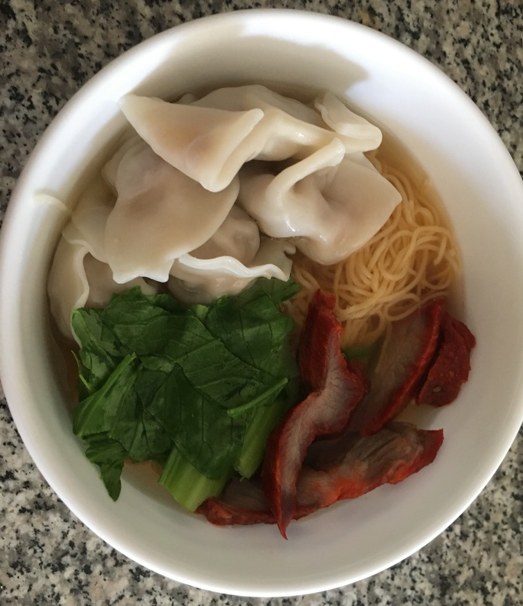
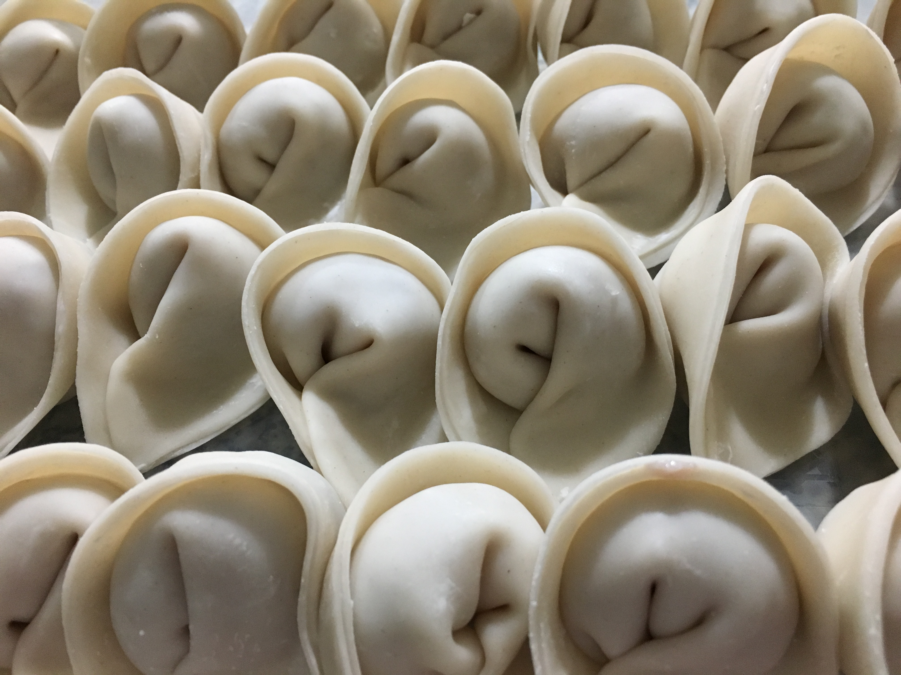

| Other | Meat | Veggie | Fruit |
|---|---|---|---|
| chicken broth | ground pork | bok choy | |
| mi | pork xa xiu | chives | |
| oyster sauce | shrimp | cilantro | |
| pepper | green onions | ||
| salt | hanh kho | ||
| sesame oil | mustard greens | ||
| soy sauce | shallot | ||
| sugar | water chestnuts | ||
| wonton soup base | |||
| wonton wrappers |
| instructions |
|---|
| Make broth according to broth recipe (as an alternative mix 4 parts chicken broth to 1.5 part water and wonton soup base) |
| Mince green onions and cilantro, cut bok choy and xa xiu |
| Make wontons according to fried wonton recipe |
| Add wontons to pot of boiling water, once it has floated to the surface cook for 2-3 more min |
| Boil mi for 2-3 min |
| Eat with mi, veggies, wontons, xa xiu, broth, and hanh kho |
| Alternatively, make mi hoanh thanh kho by replacing broth with sauce of ratios 2 hoisin sauce : 1 soy sauce : 1 oyster sauce : 2 sugar with a dash of sesame oil adjusted to taste with water |